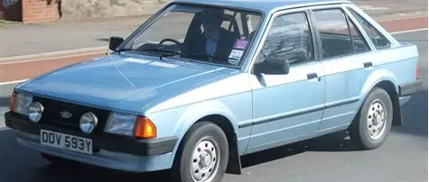

O Ford Escort, lançado no Brasil em 1983, foi o primeiro "carro mundial" da marca no país, marcando época com suspensão independente e versões como o esportivo XR3. Com motorização CHT e posteriormente motores AP da VW (na era Autolatina), evoluiu de um compacto moderno para um hatch/sedã com injeção eletrônica nos anos 90, sendo produzido até 2003.
O Escort se destacou não apenas pelo design moderno e opções esportivas mas também por sua importância nas parcerias industriais, inovações técnicas e participação em competições de rally. No Brasil, ficou lembrado pelo XR3 conversível, sendo um ícone dos anos 80 e 90.
Internacionalmente, versões como o Escort RS Cosworth ganharam notoriedade em corridas e como referência em pequenos esportivos

Lançamento: O Ford Escort foi lançado no Brasil em 1983, substituindo o Corcel II e representando o segmento de carros médios da Ford no país
Design: O modelo apresentou um design moderno e esportivo, com três ou cinco portas, cores vibrantes e defletores aerodinâmicos.
Versões: Disponíveis em versões como básico, L, GL, Ghia e XR3, sendo o XR3 a versão mais esportiva.
Ficha Técnica: O Escort ofereceu motores CHT 1.35L e 1.6L, com opções de motorização a álcool e a gasolina. O Ford Escort 1.8 16V 1998 possui um câmbio manual de cinco marchas que oferece controle direto do condutor. A transmissão é uma transmissão manual de cinco marchas, que complementa a performance do veículo. A suspensão independente dianteira com amortecedores McPherson e sistema de torção atrás proporciona conforto moderado sem comprometer a estabilidade em curvas. Os freios dianteiros discos ventilados combinados aos traseiros tambor garantem segurança em diversas condições climáticas.
Conversível: Em 1985, o Escort XR3 foi lançado como conversível, sendo o primeiro cabriolet nacional fabricado com aval de uma grande fábrica
Evolução: O modelo passou por várias reestilizações ao longo de sua produção, mantendo-se atual e moderno.
Veja também um vídeo mostrando um Ford Escort
Curiosidades
Primeiro carro da Ford a ser projetado como um "carro mundial": O Escort foi desenvolvido para ser produzido e comercializado em vários mercados ao redor do mundo, incluindo Europa, América Latina e África.
Incorporação de motores Volkswagen: Entre 1987 e 1996, a Ford e a Volkswagen formaram uma joint venture chamada Autolatina, resultando na introdução de motores AP da Volkswagen, como o motor 1.8, no modelo XR3.
Versões clonadas para a Volkswagen: O Escort XR3 foi um dos poucos carros nacionais a oferecer versões clonadas para a Volkswagen, destacando-se entre os modelos mais desejados da década de 1980.
Edição nos 75 anos da Ford brasileira: O Escort também teve uma edição especial nos 75 anos da Ford brasileira, celebrando a marca e o modelo.